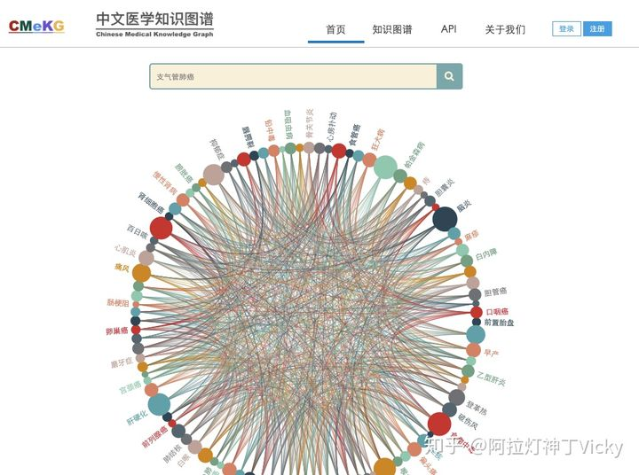

PROJECTS
CMeKG(Chinese Medical Knowledge Graph) Labeling Platform Construction 12/2018-03/2020
Undergraduate Researcher, Project Commissioned by Peking University and Peng Cheng Laboratory
- Helped develop visual Medical Knowledge Graph labeling platform (website) with Python Flask and Vue.js that can be used by more than 100 researches simultaneously.
- Trained a LSTM+CRF model with existing labeling result to implement an automatic labeling function on the platform.
Medical Knowledge Base Q&A System (Graduate Thesis) 12/2020-06/2021
Undergraduate Researcher, Zhengzhou University Natural Language Processing Laboratory
- Analysed data in CMeKG and combined decision tree algorithm to imitate a doctor diagnosing process.
- Led a seven-people team and ranked top 3% in the graduate thesis final review.
Intro of CMeKG
 CMeKG is currently version 1.0, including: 6310 kinds of diseases, 19,853 kinds of drugs (Western medicine, Chinese patent medicine, Chinese herbal medicine), 1,237 kinds of diagnosis and treatment techniques and equipment structured knowledge description, covering the clinical symptoms of the disease, onset location, drug treatment, surgical treatment There are more than 30 common relationship types, such as differential diagnosis, imaging examination, high-risk factors, transmission routes, multiple groups, clinics, etc., as well as drug components, indications, usage and dosage, expiration date, contraindications, etc., and there are more than 20 medical entities associated More than 10,000, CMeKG's current conceptual relationship examples and attribute triples amount to more than 1 million.